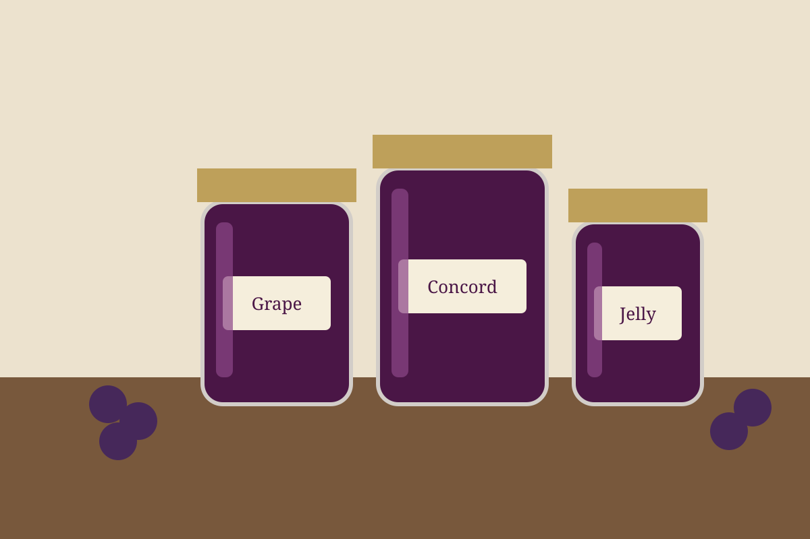

Homemade Grape Jelly
Classic grape jelly made from bottled juice with powdered pectin. It's clear and glossy, sets firm, and tastes like real Concord grape.

6 jars
By
Yield: about 6 half-pint jars
Prep:
Cook:
Total:
Difficulty: Easy
Gear: Large heavy pot, water-bath canner or deep stockpot with rack, 6 half-pint jars with new lids, ladle, funnel.
Ingredients
- 4 cups 100% Concord grape juice (like Welch's 100%, not cocktail)
- 1 (1.75 oz) box Sure-Jell Original powdered pectin (pink box, not low-sugar)
- 5 cups granulated sugar, measured exactly
- ½ teaspoon butter, optional, to reduce foam
Instructions
Before you cook
- Wash the jars and lids, and keep the jars hot in simmering water until filling.
- Measure the sugar into a separate bowl so it's ready to add all at once.
- Fill the canner with enough water to cover the jars by 1 inch and start heating it.
Cook
- Stir the juice and pectin together in the pot, adding the butter if using.
- Over high heat, bring to a full rolling boil that doesn't stop when stirred.
- Add all the sugar at once, stir, and return to a full rolling boil.
- Boil hard for exactly 1 minute, stirring constantly.
- Remove from the heat and skim off any foam.
- Ladle into the hot jars, leaving ¼ inch of headspace. Wipe the rims and apply lids and bands fingertip-tight.
- Process in boiling water for 5 minutes, adding 1 minute per 1,000 ft of elevation.
- Remove the jars and leave undisturbed for 24 hours. Lids should pop down; refrigerate any jar that didn't seal.
Notes: Sealed jars keep about 1 year in the pantry. Once opened, refrigerate and use within about 3 weeks. If it hasn't set after 24 to 48 hours, allow up to 2 weeks; runny jelly still makes good syrup or glaze. Don't reduce the sugar or skip the hard 1-minute boil, because both are needed for the pectin to set. Serve on biscuits with sharp cheddar or country ham.